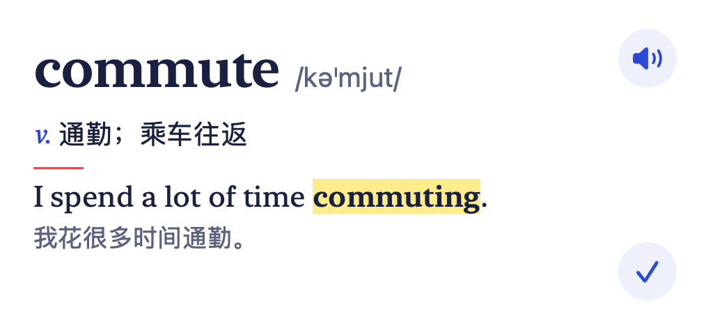
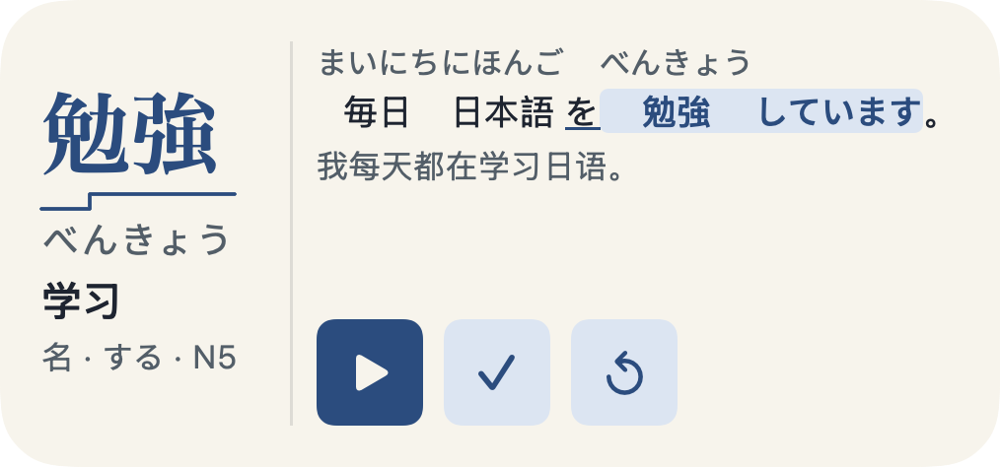
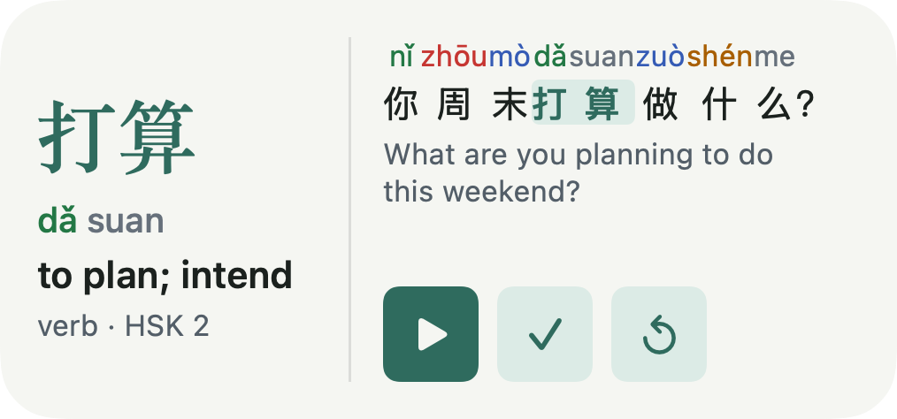
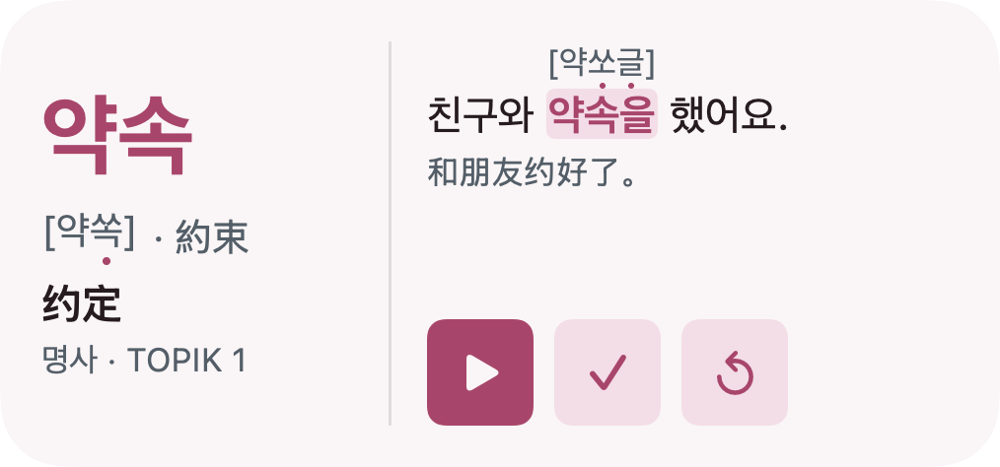
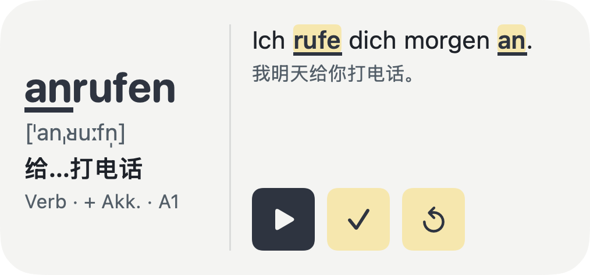
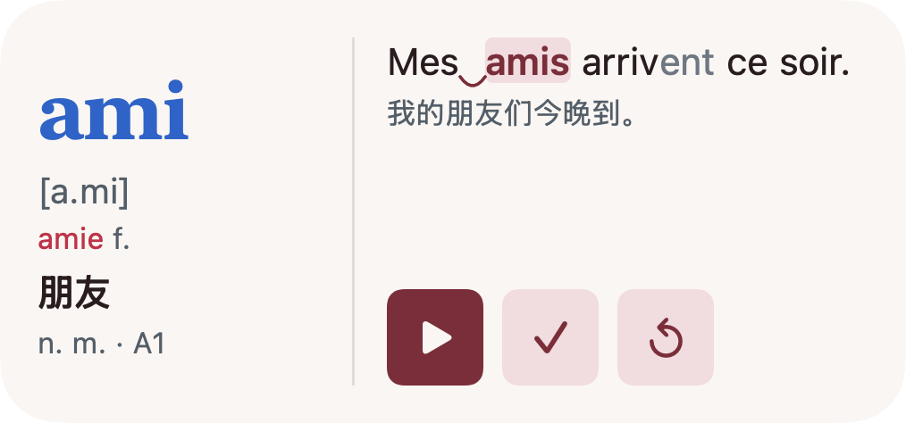

一词 · 英日汉韩德法 · 单词小组件
不用打开 App的背单词。
每次看手机，顺便认识一个词。
不打卡，不催你，也不用专门开始。
拖延背单词？这次，不用先开始。
commute · 通勤
10月3日 星期六
从早到晚
不是抽时间。
是顺便看见。
每天 3 个新词，穿插到期复习。
卡片按当天的量自动换，半小时到两小时一张。
出门前，先遇见 reluctant。
点按钮就能换词，
不占系统的定时刷新额度。
今天，慢慢来。
一张卡，两个动作
听一下。
或是，认识了。
发音不跳走，认识就换词。
这就是你和一词的全部日常。
当然，什么都不点也可以。
六种语言
一门语言，
一种自己的卡。
不是换个词库就完事。
每门语言，都按它的难点来画这张卡。
小组件可以各自选语言，桌面上并排放。

英语English
英美音标、例句高亮、词形与搭配。九本词书，从初中到 GRE。

日语日本語
振假名、声调线，例句高亮活用形；部分中日同形词附提示。JLPT N5–N1。

汉语中文
拼音按声调着色，变调、量词与汉字部件。面向外国学习者，释义为英文。HSK 1–6。

韩语한국어
方括号标出实际读音，显示汉字词，例句标注音变。TOPIK 分级。

德语Deutsch
名词按词性着色并附冠词，IPA、复数与动词三形；可分动词两头高亮。CEFR A1–B2。

法语Français
阴阳性与阴性形式、IPA，例句画出连诵弧线，不发音字母变淡。CEFR A1–B2。
一次买断，六种语言全部包含。每门语言各有词书和进度，在设置里随时切换。
七级记忆阶梯
不知不觉，
就多记一点。
见过，不等于记住。
一词会在 1、2、4、7、15、30、60 天后，
让你和它再见一面。
复习卡展示过，就向前一步。
复习时认识了，就再跨一步。
忘了也没关系，再见几次就好。
小组件家族
哪块屏幕，
都能放一词。
桌面、锁屏、床头。
在你本来就会看见的地方。
桌面 · 小号
一眼，词与义。
桌面 · 中号
再多看一句，就更记得住。
桌面 · 大号
词、音、义、句，完整的一张卡。
锁屏 · 单行
时间上面，也有一词。
锁屏 · 矩形
还没解锁，就遇见了。
StandBy · 夜间
夜里，安静地亮着。
控制中心
按一下，听今天这一词。
iOS 18 及以上
小小的一张卡，装得下这些。
- 种学习语言
- 6
- 个英语单词
- 15,271
- 条中英例句
- 27,161
- 条数据收集
- 0
- 核心 3000
- 初中
- 高中
- CET-4
- CET-6
- 考研
- 雅思
- 托福
- GRE
- JLPT N5–N1
- HSK 1–6
- TOPIK
- 德语 A1–B2
- 法语 A1–B2
不只在口袋里
iPhone、Mac、手表。
一直在你身边。
iPhone 现在
桌面、锁屏，一眼一个词。
App Store 即将上架Mac 同时上架
菜单栏单词与桌面小组件，陪你工作。
与 iPhone 一次购买Apple Watch 同时上架
表盘、通知与智能叠放，抬腕遇见。
随 iPhone App 安装进度随你走，iCloud 自动同步。
安静，也干净
记住单词。
不记住你。
不用注册，没有广告。
没有账号，没有打卡排名，也没有数据追踪。
把词库，完整放进手机。
单词、例句和系统发音，离线也能用。
只同步到你的 iCloud。
进度与设置存入 iCloud 私有数据库，开发者看不到。
再说清楚一点
你可能
还想知道。
必须每天打开 App 吗？
不用。安装后添加桌面或锁屏小组件，就能用默认词书和节奏学习。选词书、调设置时，再打开 App。
什么都不点，也会安排复习吗？
会。新词进入七级记忆阶梯；复习卡展示过就前进 1 级，复习时点「认识」前进 2 级，点「不熟」回到第 1 级。
支持哪些语言？能同时学几门吗？
英语、日语、汉语、韩语、德语、法语。每门语言有自己的词书、进度和卡片样式，在设置的「学习语言」里随时切换；小组件可以各自选语言，比如桌面上一张英语、一张日语。汉语课程面向外国学习者，释义为英文。
能选词书、调整每天的词量吗？
可以。英语有九本词书，其他语言按 JLPT、HSK、TOPIK、CEFR 分级，随时切换，已学过的词不用重来。每天新词可选 1、3、5、10 个，默认 3 个，轮换间隔也能调整。
没网能用吗？发音会打开 App 吗？
六种语言的词库与例句全部离线打包，发音使用系统自带的各语言语音。点小组件上的发音按钮，不会跳进 App。只有 iCloud 同步需要联网。
支持哪些设备和系统？
iPhone 需要 iOS 17 及以上，控制中心读词需要 iOS 18 及以上。Mac 需要 macOS 14 及以上，提供菜单栏单词与桌面小组件。Apple Watch 需要 watchOS 10 及以上，随 iPhone App 安装。
什么时候能下载？要多少钱？
iPhone、Apple Watch 和 Mac 版正在提交 App Store 审核，上架后这里会放下载链接。一次买断 0.99 美元，六种语言全部包含，同一个 Apple 账户三端通用；没有内购、没有广告，也不需要注册账号。
背单词这件事，
别再拖延。
I have to stop procrastinating.
我不能再拖延了。
英日汉韩德法 · iPhone · Apple Watch · Mac · 一次买断 0.99 美元